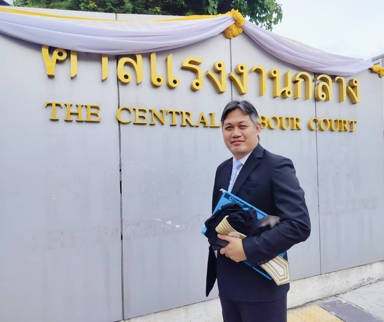

รู้เลขคดีแล้ว ค้นตรงได้เลย
ใส่เลขคดี ถ้ามีในคลังนี้จะพาไปที่คลัง ถ้าไม่มีจะได้ลิงก์ไปยังเว็บไซต์ที่เผยแพร่คำพิพากษานั้น
สำนักงานทนายความและที่ปรึกษากฎหมายพรนารายณ์และเพื่อน
เว็บไซต์สำนักงาน thanaiphorn.com ↗
เลือกประเด็นปัญหาหรือพิมพ์คำค้น เพื่ออ่านสรุปหลักกฎหมายจากคำพิพากษาศาลฎีกาและศาลอุทธรณ์คดีชำนัญพิเศษ และเปิดเอกสารที่ใช้สรุปของแต่ละเรื่อง

ใส่เลขคดี ถ้ามีในคลังนี้จะพาไปที่คลัง ถ้าไม่มีจะได้ลิงก์ไปยังเว็บไซต์ที่เผยแพร่คำพิพากษานั้น